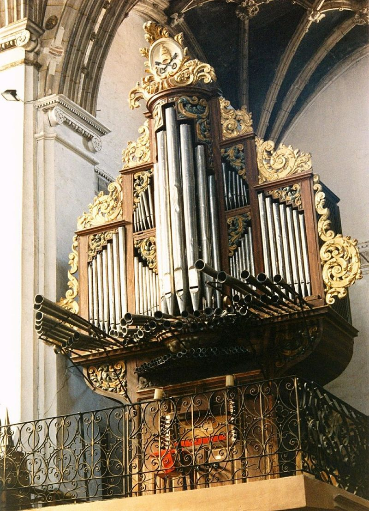

El siglo XVIII: el Catastro y los ilustrados
Una villa más pequeña que en el siglo XVI, pero que se recupera despacio. El Catastro de Ensenada la retrata casa por casa, y un grupo de vecinos ilustrados funda en 1785 una sociedad para socorrer a los pobres y abrir escuelas.
En esta página (6 apartados · 11 min de lectura)
Alaejos empezó el siglo XVIII con poco más de 2.000 habitantes y llegó a 2.800 en 1787, según el censo de Floridablanca (José M. Baraja, programa de 2021). Era una recuperación modesta, lejos de los más de 4.000 del siglo XVI. En lo administrativo, hacia 1760 Alaejos pertenecía al partido de Cuéllar, de la provincia de Segovia; en 1768 pasó a la provincia de Toro y, con la división provincial de 1833, a la de Valladolid.
José Ojeda Nieto llamó a los siglos XVIII y XIX los de «desvelos y transformaciones»: una etapa estable que preparó una prosperidad nueva. La población osciló entre 500 y 600 vecinos, con 2.697 habitantes en el censo de 1787. Poco a poco el trigo sustituyó al vino, y después la cebada al trigo: en 1751 se cogieron 20.791 fanegas de trigo y 16.386 de cebada, y en 1791, 21.253 y 21.313. En 1798 se roturaron 1.200 fanegas de baldíos y 800 del monte. La cabaña llegó a unas 7.000 ovejas, que daban lana a los talleres de paños (Ojeda Nieto, Alaejos, apuntes histórico-artísticos, 1991, págs. 17-19).
En 1704 llegó a la villa Felipe V. Durmió en casa de don Diego Bereterra mientras su ejército acampaba en los prados de Siete Iglesias, oyó misa de su capellán y siguió camino. Y el castillo se venía abajo: en 1714 el concejo avisó de su mal estado, y en 1739 lo describía «ttan derrottado que estta ynavitable», sin más que las paredes, algunas rejas y las puertas de hierro de la entrada y de la cárcel (Ojeda Nieto, Alaejos, apuntes histórico-artísticos, 1991, págs. 19-20).
El Catastro de Ensenada: la villa en 1751
Entre 1750 y 1754 el marqués de la Ensenada mandó averiguar, pueblo por pueblo, las tierras, las casas, los oficios y las rentas de toda la Corona de Castilla. En el Ayuntamiento de Alaejos se conserva un manuscrito de 1751 con los datos de la villa, que extractó Adelio Castaño Casquero (programa de 1981). La villa y la de Valdefuentes, agregada a ella, eran de señorío del duque de Veragua.
| Vecinos | 538, de ellos 119 viudas |
|---|---|
| Casas | 528: 101 altas, 414 bajas, 6 inhabitables y 3 arruinadas |
| Término | 20.302 obradas. Unas 9.950 de tierra de labor, una cuarta parte de viña, prados, monte y pasto, 25 de eras y 5 de huertas |
| Clero | 25 beneficiados en las dos parroquias, 15 clérigos, y en el convento de San Francisco 21 religiosos de misa y 5 legos |
| Asistencia | Un hospital para pobres, con 20 «pobres de solemnidad» |
| Ganado | 83 pastores, señal de abundante ganado lanar, y 26 colmenas |
La lista de oficios es un retrato de la villa: 213 labradores, 202 jornaleros y 83 pastores; 7 panaderos, 7 mesoneros, 8 zapateros, 5 sastres, 10 cardadores, 5 tejedores y 7 tejedores de lienzos; 3 alfareros, 3 herradores, 4 albañiles, 2 carpinteros, un cerrajero, un cubero y un albardero; 6 mercaderes, un tratante de cerdos, un abacero y un estanquero; un médico, un boticario, dos cirujanos y tres barberos; un maestro de primeras letras, un escribano, un abogado eclesiástico, dos organistas, dos sacristanes, un pregonero, un cillero y un dorador.
Castaño volvió sobre esos datos en 1991 y los fechó en 1752. Agrupados por sectores, el campo ocupaba a 498 personas, el 72,9 %; los oficios artesanos, a 66, el 9,7 %, con mayoría del ramo textil; y los servicios, a 119, el 17,4 %, de ellos 68 eclesiásticos. Su versión de la lista no es idéntica a la de 1981: cuenta seis escribanos en lugar de uno y añade cereros y confiteros, un peraire, un zapatero de viejo, un carretero, un tablajero y un obligado de carnes (Castaño Casquero, Alaejos, apuntes histórico-artísticos, 1991, págs. 66 y 72).
Muchas calles tenían ya el nombre que conservan o han conservado hasta hace poco: Zabacos, la Fortaleza, Carranza, Juan Méndez, Pastores, Perogiles, Lucas Martín, la Ronda, la Gargantilla, Ronda de San Francisco, Casas Nuevas, las Conchas, el Arrabal y la Plaza Mayor. También los pagos, como Carremedina, la Morcilla, las Latas, Montenegro, el Castaño, Carrelanava, Picazos o el Ortigal. Y los apellidos: Perlines, Puertas, Manjarrés, Méndez, Santana, Carrasco, Casado, Caballero, Salamanqués, Sandonís, Alonso, Sevilla, Carracedo, Berdote, Castander, Cesteros, Hernández…
Entre los mayores propietarios aparecen Lope Méndez Ladrón de Guevara, con más de 330 obradas y 82 aranzadas de viña, Pedro Gómez Perlines, Pedro Naba Español, Martín Méndez Velázquez y Manuel Vadillo Basteros. La Iglesia poseía 3.713 obradas.
Quién cobraba: el señor, la Iglesia y el rey
Adelio Castaño Casquero explicó en 1991 adónde iba lo que pagaban los vecinos (Castaño Casquero, Alaejos, apuntes histórico-artísticos, 1991, págs. 69-72). Al señor, el duque de Veragua, le correspondían las alcabalas, que gravaban las ventas; la martiniega, que se pagaba por San Martín por el disfrute de la tierra; la media sisa, que rebajaba el peso o la medida de la carne, el pan, el vino o la harina; las tercias reales, un tercio del diezmo que cobraba él porque la villa estaba enajenada de la Corona; el portazgo, por el paso del ganado; y los derechos del peso real, el almotacén de medidas, las romanas de la carnicería y la correduría de vinos y vinagres. Por eso al rey le llegaba poco: el encabezamiento de millones, que se pagaba con lo que producían la carnicería y la abacería, los servicios ordinario y extraordinario y los derechos del aguardiente. Los señores y sus impuestos se cuentan en La villa de señorío.
La Iglesia era dueña del 19,1 % del término, una de cada cinco hectáreas: 3.713 obradas que rentaban más de 100.000 reales, 1.313 de ellas arrendadas a colonos. Cobraba además alquileres de casas, aniversarios y dotaciones, y los vecinos pagaban el voto de Santiago, 650 reales para la catedral de Compostela. El llamado cuarto dezmero iba a la catedral de Salamanca y el vollo, al abad de Medina del Campo. Muchas tierras, casas y bodegas tenían dueños de fuera: en Salamanca, la Compañía de Jesús, la catedral, la Universidad y el colegio de los Nobles Irlandeses; en Toro, la colegiata y sus canónigos; en Madrigal, la iglesia de San Nicolás; y en Valladolid, entre otros, la Inquisición, las monjas de San Quirce, Nuestra Señora del Prado y el monasterio de la Santa Espina.
El Ayuntamiento administraba los bienes propios: 1.417 obradas de monte, 134,5 de prados, el matadero, y la carnicería, la abacería y la taberna, que eran públicas.
Los diezmos y la cilla
Durante más de quinientos años los vecinos entregaron a la Iglesia la décima parte de su cosecha bruta. José Ojeda Nieto explicó cómo se repartía en Alaejos: un tercio para los beneficiados de las dos parroquias, otro tercio para el cabildo de la catedral de Salamanca y el último a partes iguales entre la fábrica de las iglesias, el señor de la villa y la Universidad de Salamanca. El grano y el vino se guardaban en la cilla o casa panera de los diezmos, en la calle de los Zabacos, que el cabildo salmantino fue ampliando desde 1536. En 1774 se derribaron las casas viejas y se levantó una panera nueva, con piedra de Castrejón, cal de Siete Iglesias, ladrillos de los tejares alaejanos de Felipe Baraja y Bernardo Santana y madera de Pedrajas. Costó 18.034 reales y 26 maravedís (programa de 2005).
Los ilustrados de Alaejos
En la segunda mitad del siglo, el gobierno de Carlos III animó a crear en los pueblos sociedades económicas que fomentaran la industria, la agricultura y la enseñanza. Alaejos tenía una relación privilegiada con el más famoso de sus promotores, Pedro Rodríguez Campomanes, presidente del Consejo de Castilla: dos de sus hijas se casaron con alaejanos y vivieron en la villa. María Bibiana casó en 1775 con Luis Manuel de Isla, conde de Isla, y Manuela Susana en 1768 con Florentino de Nava y Perlines.
En 1784 un grupo de vecinos —Tomás Méndez y Prado, Pedro Francisco Navas, Manuel Joaquín Ballesteros, Pedro Guerrero, Manuel Pérez Sandonís, los Méndez Vadillo y otros— escribió al Consejo de Castilla. Los hermanos que atendían el hospital del Buen Pastor lo habían abandonado, y pedían que los diezmos de la vieja iglesia de Valdefuentes se destinaran a los pobres. Siguiendo el consejo de Campomanes, el 8 de enero de 1785 cincuenta y dos socios aprobaron los estatutos de una sociedad, y el 28 de junio Carlos III la aprobó como Real Sociedad Caritativo-Económica de la Villa de Alaejos. Su lema: «En favor de la Patria. A socorrer la pobreza y desterrar la pereza».
La sociedad llegó a tener 116 o 117 socios, según la fuente, y desarrolló varias iniciativas (José M. Baraja, programa de 2021; Adelio Castaño, programa de 1989):
- Una Casa de Misericordia en el antiguo hospital del Buen Pastor, en la plaza de Santa María, atendida por los propios socios.
- Un montepío para jornaleros, que prestaba a los pobres que no eran mendigos.
- Escuelas gratuitas de niños y de niñas. La Gaceta de Madrid del 27 de julio de 1785 citaba «los progresos que han hecho las 110 niñas que asisten a la escuela gratuita que ha abierto la sociedad».
- Dos fábricas, una de esteras y otra de velas de sebo, «con arreglo al método de Mr. Duhamel», instaladas en una sala del hospital para aumentar sus rentas.
Cómo funcionaba por dentro, con su Junta de Comisión, sus limosneros y sus «padres de pobres», se cuenta en La Real Sociedad Caritativo-Económica.
Además funcionaba en la villa una fábrica de paños bastos. Según el geógrafo Tomás López, sus productos se parecían tanto a los de la fábrica de Santa María de Nieva que en 1777 una real cédula mandó poner en ellos las armas de la villa con la inscripción «Real Fábrica de Alaejos». Tenía diez telares y producía 30.000 varas de paño y jerguilla al año. La Guerra de la Independencia acabó con la sociedad y con sus fábricas.
La Corografía de la provincia de Toro describía aquel paño como «muy a propósito al uso de las gentes del campo», del que salían muchas piezas para otros pueblos. Añadía que el comercio empezaba a animarse y que crecería cuando se consolidara el mercado semanal, que se había restablecido los sábados después de haberse celebrado los martes. Hacia 1845 Madoz contaba veinte telares de lienzos comunes, con lino traído de la sierra de Gata, y paños y jerguillas para vestir a la gente de la comarca, que se vendían también en Fuentesaúco, Toro y Zamora. Se quejaba del contrabando de lienzos y percales ingleses, y mencionaba una gran fábrica de curtidos que vendía en Arévalo, en los pueblos de alrededor y hasta en Madrid. Tuvieron también importancia los alfareros, los cesteros y los silleros (Castaño Casquero, Alaejos, apuntes histórico-artísticos, 1991, pág. 76).
La Real Sociedad es un antecedente lejano de esta asociación: también quería, con los medios de su tiempo, el bien de la villa.
Obras y personajes del siglo



Del siglo XVIII son la Casa Consistorial, construida en su último tercio según Adolfo M. Araujo, y buena parte de lo que hoy se ve dentro de los templos. En la ermita de la Casita se hicieron el presbiterio, la fachada principal y el retablo neoclásico de la Virgen. En Santa María, la sacristía nueva, el camarín y once retablos. En San Pedro, los retablos de San Antonio, del Niño Jesús, del Cristo de la Caridad y de la Virgen.
En 1766 Tomás López, geógrafo del rey, reunió una Descripción geográfica histórica de la villa de Alaejos y sus confines, que daba 75.000 fanegas de cereal, 3.520 hectolitros de vino y 4.200 cabezas de ganado. Y en la villa nacieron dos alaejanos que harían carrera fuera: Antonio Hernández Morejón (1773–1836), médico de los ejércitos y autor de la Historia bibliográfica de la medicina española, y Alejandro Ramírez Blanco (1777–1821), intendente de Hacienda en Puerto Rico y en Cuba, que en La Habana liberó la agricultura de trabas y suprimió el estanco del tabaco (José Ojeda Nieto, programa de 1992).
Para seguir leyendo
- En la biblioteca de los programas: Adelio Castaño, «Alaejos en el siglo XVIII» (1981) y «La Real Sociedad Caritativo-Económica de la villa de Alaejos» (1989); José M. Baraja, «Los ilustrados» (2021); José Ojeda Nieto, «La casa de los diezmos, o cilla» (2005) y «Expósitos y huérfanos: ¿niños queridos, niños no deseados?» (2009).
- Adelio Castaño Casquero, «La Real Sociedad Caritativo-Económica de la villa de Alaejos», en José Ojeda Nieto, Alaejos, apuntes histórico-artísticos (Valladolid, Diputación, 1991), págs. 51-76, con un estudio de la villa a finales del siglo XVIII. Se usa con autorización del autor. La sociedad, oficio a oficio, en La Real Sociedad Caritativo-Económica.
- Los estatutos de la Real Sociedad: programa de 1994 y programa de 1995.
Cómo citar esta página
Amigos de Alaejos, «Siglo XVIII: el Catastro y los ilustrados», https://www.amigosdealaejos.org/historia-del-pueblo/el-siglo-xviii/ (revisión del 18/11/2026).